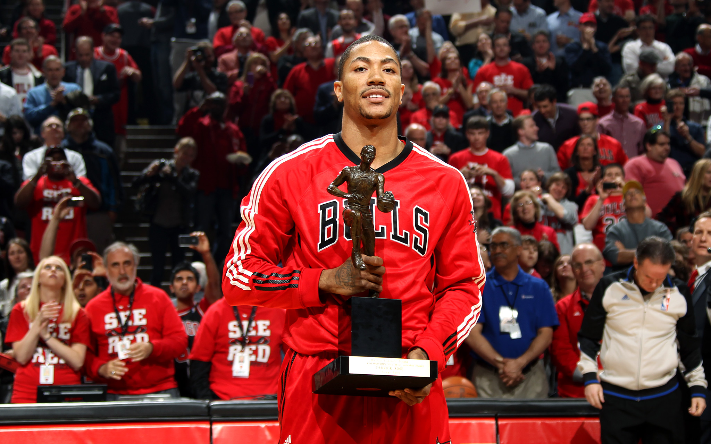

Körülbelül 13-14 évesen ismerkedtem meg mélyre menőkig a sportággal, akkoriban választottam ki azt a csapatot is ami mellett a mai napig kitartok. A BULLS az egyik (ha nem a) legikonikusabb történelemmel rendelkezik, hiszen Michael Jordant szerintem senkinek nem kell bemutatni. Hatalmas kultuszt alakítottak nem csak amerikában, de europában és a világ más pontjain is.
A csapat hat bajnokságot nyert (1991, 1992, 1993, 1996, 1997, 1998), a porból emelkedtek ki majd estek is vissza a Jordan korszak után. RING OF HONOR->
Nem könnyű manapság ennek a csapatnak szurkolni, de aki hű a csapathoz annak a legkisebb öröm is hatalmas. Ebben a csapatban játszott az én példaképem is a sportban, Derrick Rose. Ő volt a másolandó példám akár a sulis, akár a felnőtt cspatban, viszont azt a tempót amit ő diktált halandó ember nem képes véghez vinni, még ő sem tudta, így ahogy MAJDNEM nekem is, így neki is egy sérülés törte derékba a kaerrierjét, holott ő volt az NBA történelmében a legfiatalabb MVP (22 évesen).

2012 bajnoksága során, karrierjének még csak nem is a csúcsán 23 évesen elülső keresztszalagszakadása volt a térdében. Ezután sajnos nem volt olyan lobbanékony, gyors és domináns. Történelmet írhatott volna, jobb volt a szememben mindenkinél, és mint ember is egy becsületes jellem. 16 év után idén vonult vissza, jelenleg gyerekeknek tart motivációs előadásokat, segít átvészelni a nehezebb időszakokat.